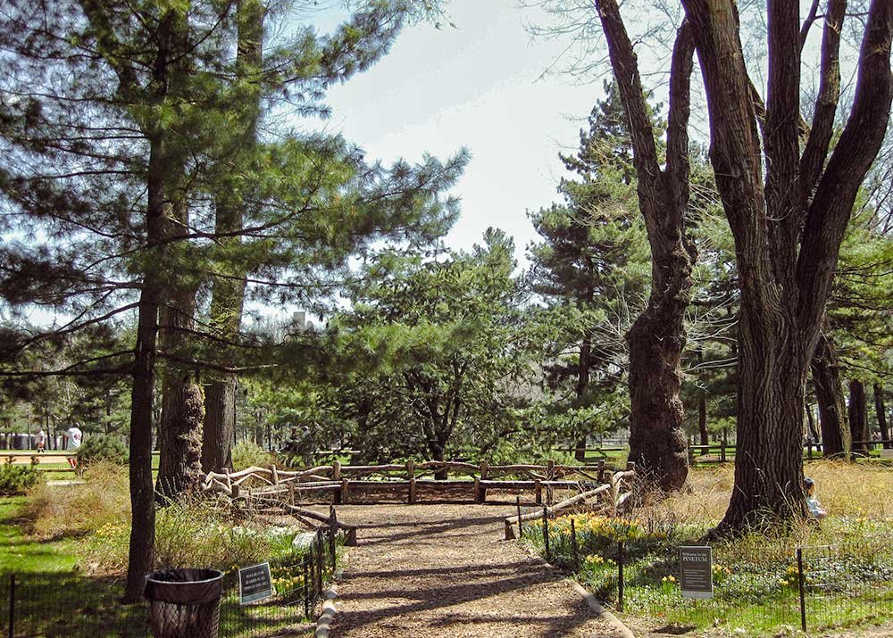
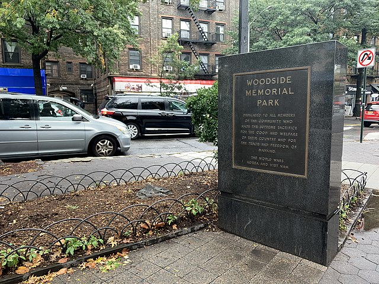

IP: 192.168.1.1
New York City, New York, USA, 10116
40.7132, -74.0061
During the pre-Revolutionary era City Hall Park was the site of many rallies and movements.
IP: 47.230.215.96
Central Park West Historic District, New York, NY 10024
40.78343, -73.96625
Near Author Ross Pinetum, which has a large variety of pine trees plus a playground across 4 acres.
IP: 47.230.215.96
6013-5877 Woodside Ave, Woodside, NY 11377
40.74526, -73.9048
Next to Woodside Memorial Park dedicated to those who served and died in World War I, II, Korea, Vietnam.
IP: 66.109.5.119
Box 1164, El Segundo, CA 90245
33.919201, -118.416584
Used to belong to the Gabrielino/ Tonga Nation tribe.
IP: 103.4.99.134
New York City, New York, USA, 10116
40.713192, -74.006065
During the pre-Revolutionary era City Hall Park was the site of many rallies and movements.
IP: 157.240.36.69
1742-1774 Stanford Ave, Menlo Park, CA 94025
37.436934, -122.193602
Known worldwide as the “Capital of Venture Capital,” Menlo Park is well situated to benefit from and help shape new technologies and markets originating from the Silicon Valley.
IP: 157.240.241.174
New York City, New York, USA, 10116
40.713192, -74.006065
During the pre-Revolutionary era City Hall Park was the site of many rallies and movements.